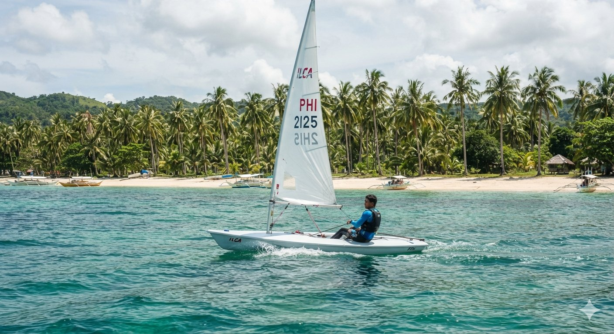
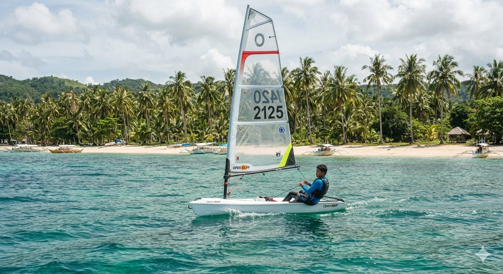
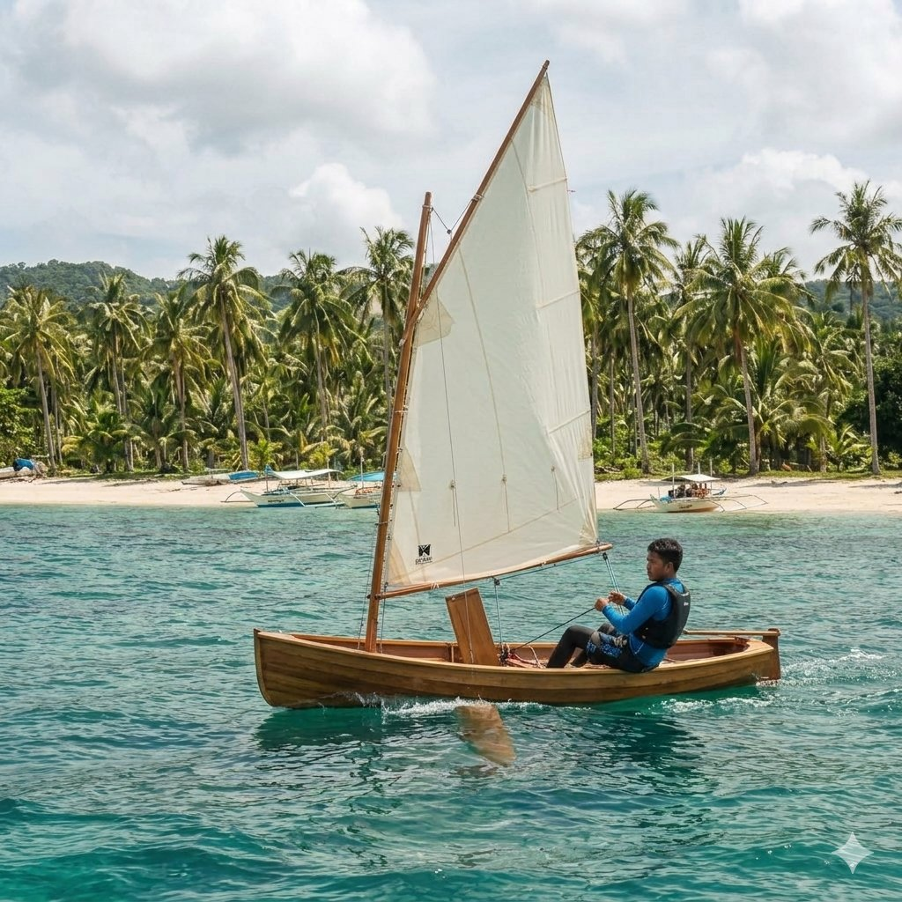

Sailboat Rentals
ILCA 7
Book this ILCA 7 for a challenging sail.

P6000 per session.
Open Skiff
Fast, responsive single-handed dinghy.

P2500 per session.
Kombi Sailing Canoe
Very light sailing canoe perfect for medium to high tide.

P5000 per session.